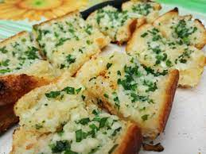

Garlic Bread

Description
A very easy recipe for garlic bread that is made with roasted garlic, butter and Parmesan cheese.
Ingredients
- 3 heads garlic
- 2 tablespoons olive oil
- 1 (1 pound) loaf Italian bread
- ½ cup butter
- 1 tablespoon chopped fresh parsley (Optional)
- 2 tablespoons grated Parmesan cheese (Optional)
Steps
- Preheat the oven to 350 degrees F (175 degrees C). Slice the tops off of garlic heads so the tip of each clove is exposed. Place garlic on a baking sheet and drizzle with olive oil. Bake until garlic is soft, about 30 minutes.
- Set the oven to broil. Slice the loaf of bread in half horizontally, and place cut-side up on a baking sheet.
- Squeeze the cloves of garlic from their skins into a medium bowl. Stir in the butter, parsley, and Parmesan cheese until well blended. Spread onto the cut sides of the bread.
- Broil bread until toasted, about 5 minutes.